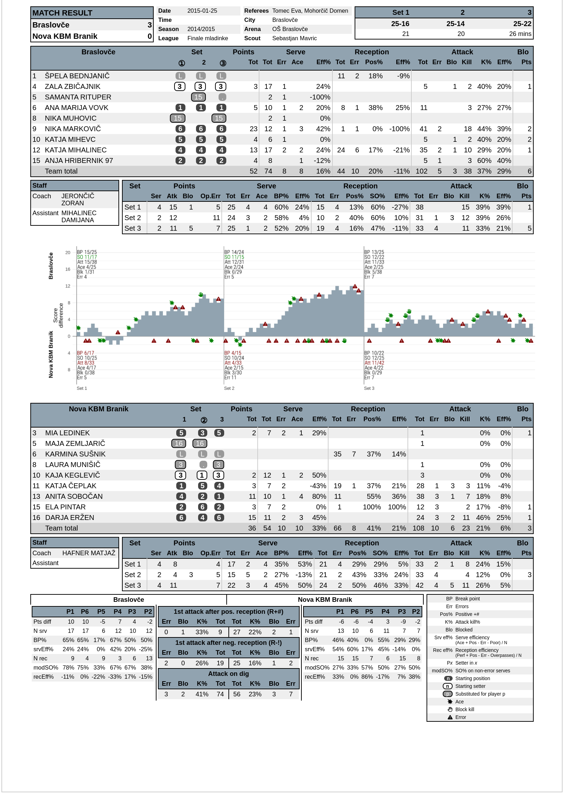
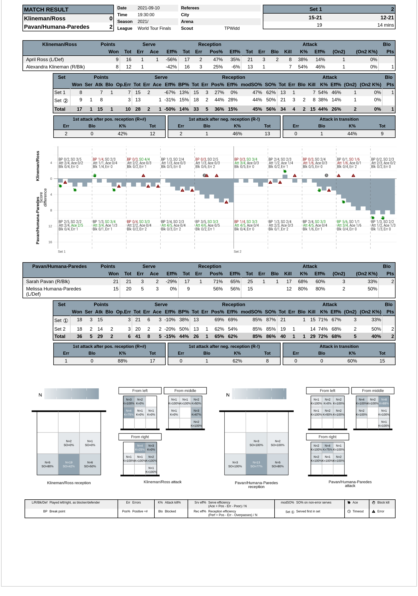

The volleyreport package provides functions for generating reports from volleyball match files.
Installation
options(repos = c(openvolley = "https://openvolley.r-universe.dev",
CRAN = "https://cloud.r-project.org"))
install.packages("volleyreport")
## or
## install.packages("remotes") ## if needed
remotes::install_github("openvolley/volleyreport")Usage
## read dv file
library(datavolley)
library(volleyreport)
x <- dv_read(dv_example_file())
## generate the report
rpt <- vr_match_summary(x, style = "ov1", format = "paged_pdf")Which should give you something like:

Or for a beach file:
